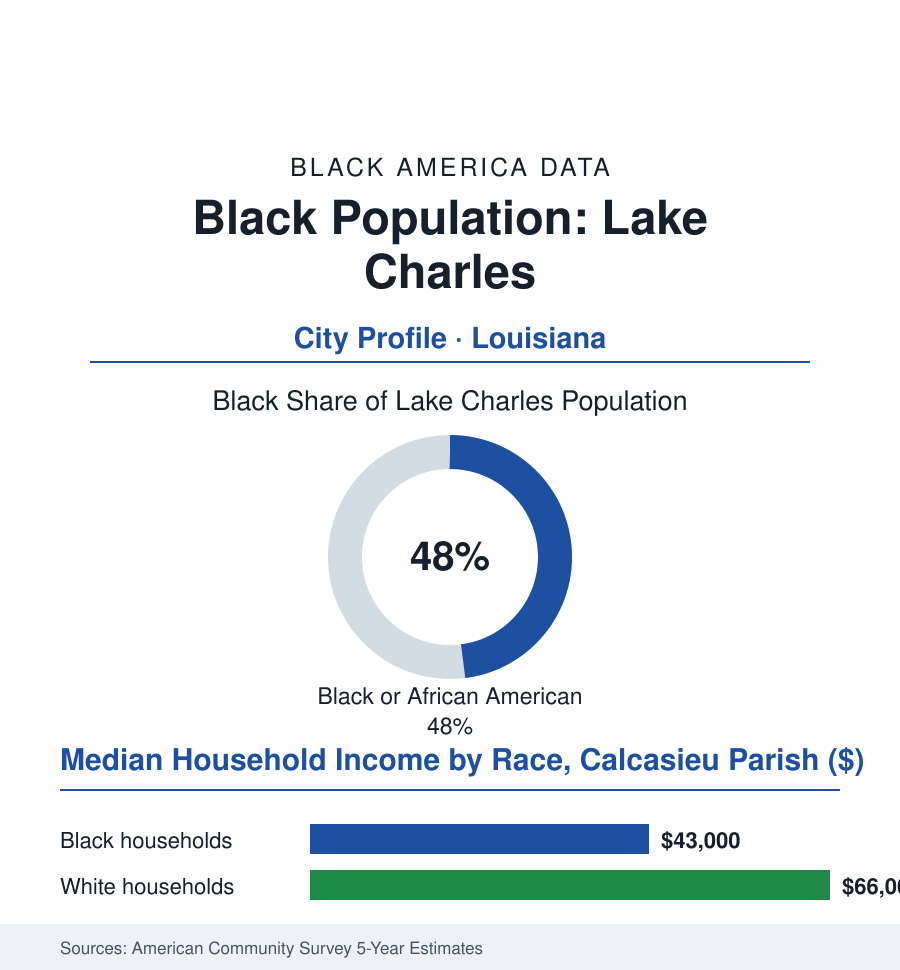

Black Cities
Black Lake Charles: 40,000 People in the Storm's Corridor
Lake Charles is a near-majority Black petrochemical port in southwest Louisiana — a Creole crossroads whose plants pay the region's best wages and whose sky keeps sending the bill. The numbers.

Lake Charles's Black community numbers roughly 40,000 people — about 48% of the city's 85,000 residents, on the edge of majority — in the southwest Louisiana port where the petrochemical corridor meets hurricane country, a Creole crossroads of zydeco and plant gates, Catholic parishes and refinery flares, whose people have rebuilt from the sky four times in five years. This article reads Lake Charles's numbers.
Creole Country, Plant Country
The founding mixture is Louisiana's western recipe: the free people of color of the old Attakapas frontier, the Creole families whose French and Spanish and African lines the records braid, the enslaved labor of the rice and cattle country, and after emancipation the railroad and the sulfur and timber booms drawing the Black workforce that built the city's Black neighborhoods north of the tracks. The twentieth century's engine was the corridor: the refineries and chemical plants along the ship channel — among the densest petrochemical complexes on earth — whose unionized industrial jobs paid the region's summit wages, the Black plant workers of the workforce file climbing the ladder the civil-rights litigation pried open (the plant gates' seniority fights of the era preserved in the legal record), the incomes building the north side's brick subdivisions and the Catholic and Baptist parish networks of a community whose culture — zydeco's accordion frontier running through its dance halls, the trail rides' Creole cowboy tradition (the horse culture of the prairie parishes, documented in the culture file as Louisiana's Black West) — is distinct in this atlas: neither Delta nor New Orleans, but the prairie's own register. The civil-rights chapters ran through the schools and the city's services into near-parity demographics without majority power (the at-large maps of the era, the ward fights after), the community's near-half share translating, in the recent decades, into the council seats and the mayor's office contests of an evenly divided city — coalition politics as the permanent condition.
The Sky's Ledger, 2020 Onward
McNeese State University's rows belong in the ledger: the hometown university whose enrollment draws the parish's Black graduates in the local pipeline's main channel, its nursing and engineering programs feeding the plants and the hospitals, its campus — itself storm-battered and rebuilt — standing as the city's co-anchor beside the corridor. In the storm years its semesters bent around the disasters like everyone else's. In the data, its retention holds like a promise.
The modern file is written by the weather file's most punishing modern sequence: the great hurricane of 2020 — among the strongest landfalls in Louisiana's recorded history, its eye crossing the city directly — followed within weeks by a second hurricane, then a flood, then an ice storm, four federally declared disasters in a single year, the recovery data becoming the file's grim specialty: the blue-tarp years, the housing stock's losses concentrated in the north side's older neighborhoods, the recovery programs' documented lags (the federal aid formulas' renter-blindness of the tenant file, the buyout maps, the insurance market's collapse into the state plan as the private carriers fled the corridor — the homeowner file's Louisiana chapter written in premium notices), the population's dip and partial return in the estimates. Against the sky stands the corridor's economics, and the file holds both: the plants' wages steady through the rebuilding, the LNG terminals' construction boom on the channel (the parish's industrial investment announcements running to the tens of billions, the workforce demand of a generation) — the same coastline concentrating the region's best paychecks and its worst risks on the same families, the environmental file's fence-line rows running through the north side's zip codes in the health data. The forward argument of the city is the argument of the whole corridor, which the data leave open: whether the LNG era's tax base funds the resilience — the drainage, the housing, the insurance backstop — that lets a near-majority Black community keep its address on the prettiest and most punished coast in the atlas.
Reading Lake Charles's Numbers
Forty thousand people, forty-eight percent, one coastline: Lake Charles is the cities file's resilience chapter — the community that has rebuilt from the sky four times and staffs, between storms, the plants that power the country's winter. The census counts the residents. The tarps coming off the north side's roofs — slowly, then all at once — count them better.
More in Black Cities
Black Atlanta: Population, Distribution, and Growth of a Black Metropolis
Metro Atlanta holds more than two million Black residents — roughly one in three, second only to New York. The suburban distribution, migration history, and composition of Black Atlanta in the census data.
Black New York: The Largest Black Population in America
The New York metropolitan area holds about 3.4 million Black residents — more than any metro in the nation — and the city itself about two million. The census profile.
Black Washington: The District and the Metro
The Washington metro holds about 1.6 million Black residents, and the District itself — long a majority-Black city — now records a Black share near 41 percent. The census profile.
Source: U.S. Census Bureau, 2020 Census and American Community Survey 5-year estimates; City of Lake Charles and Calcasieu Parish records; Louisiana disaster-recovery data.